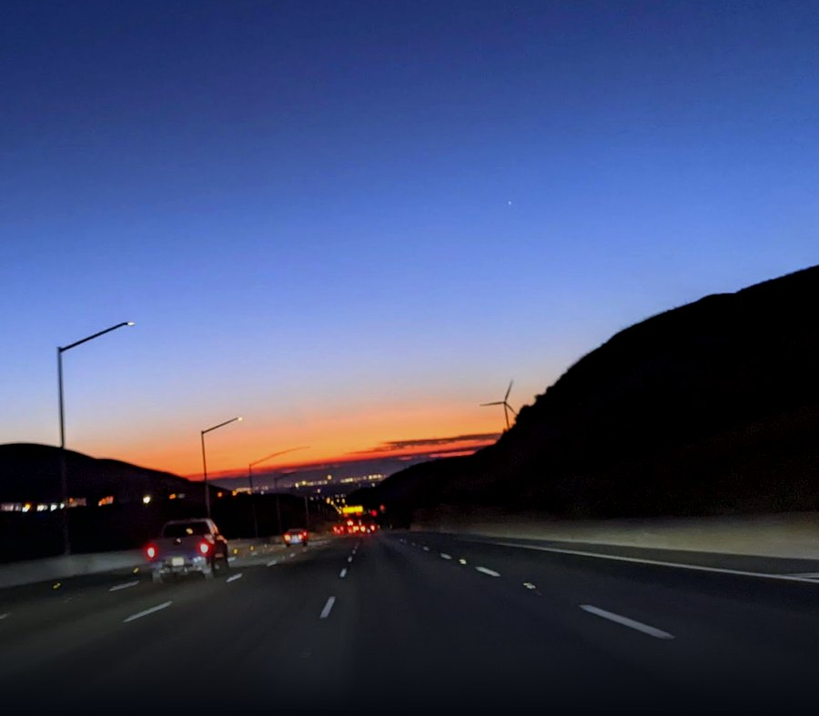

A vetted network of San Joaquin County nonprofits — starting in Mountain House — coordinating events, sharing resources, and asking for what our community needs as a united voice.

Every organization here has been vetted by phone before joining. Click through the stack to meet the nonprofits doing the work across the 209.
View full directoryEvery member can advertise their own events here — no separate approval needed once you're a vetted member.
Every member organization is vetted by phone before joining — this keeps the collective trustworthy for the community, local businesses, and the city alike. Members coordinate events, share resources, and speak with one voice when asking for things like facility access and civic support. Local sponsors can also use the collective to find causes that match what they care about.